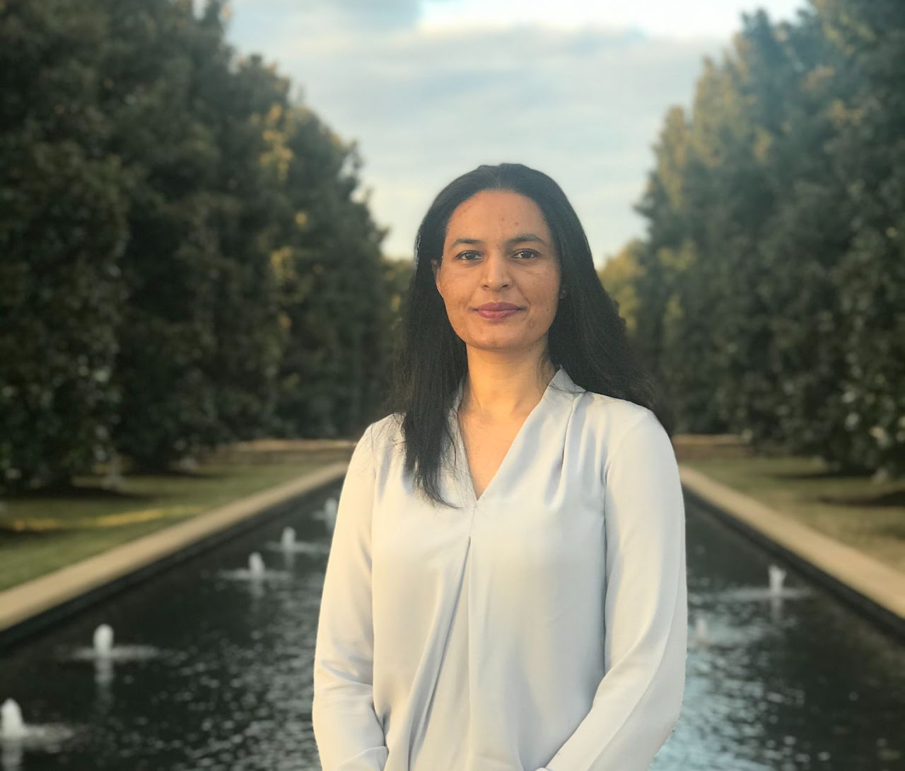

Home |
Research |
Publications |
Experience |
Teaching |
Education |
CV
|

|
Navdeep Kaur
Research Associate, The Alan Turing Institute, London, UK
Neuro-Symbolic Artificial Intelligence · Large Language Models · Knowledge Graphs
📧 Email: navdeepkjohal@gmail.com
🔗 LinkedIn:
navdeep-kaur-johal
🎓 Google Scholar:
Profile
📄 CV:
Download
|
I am a Research Associate at The Alan Turing Institute, London, working on
Robust Reasoning in Large Language Models using Probabilistic Answer Set Programming (P-ASP) scaffolds
(project page).
My research lies at the intersection of Neuro-Symbolic AI, Knowledge Graphs, and Uncertainty-aware Reasoning,
with a focus on building interpretable, logically grounded, and robust AI systems.
Updates
- Nov 2025 — My Colleague Lachlan McPheat presented our work on DecompSR at EuRIPS 2025.
- Nov 2025 — Our paper on 'DecompSR: A dataset for decomposed analyses of compositional multihop spatial reasoning' is now available on arXiv.
- April 2025 — Our paper titled "An Empirical Study of Conformal Prediction in LLM with ASP Scaffolds for Robust Reasoning" is accepted at SCI-FM, Workshop got accepted at SCI-FM, Workshop co-located with ICLR 2025 in Singapore.
- March 2025 — Our paper on 'An Empirical Study of Conformal Prediction in LLM with ASP Scaffolds for Robust Reasoning' is now available on arXiv
.
- May 2024 — Our paper on 'DynaSemble: Dynamic Ensembling of Textual and Structure-Based Models for Knowledge Graph Completion' is accepted to ACL 2024.
- May 2024 — I have joined as a Research Associate at The Alan Turing Institute London. I will be working under Prof. Alessandra Russo , Prof. Pranava Madhyastha and Prof. Anthony Cohn . To know more about my project at the Alan Turing Institute, click here
- Jan 2024 — I have joined as Assistant Professor at SBBS University, India.
- Nov 2023 — Our paper on 'Ensembling Textual and Structure-Based Models for Knowledge Graph Completion' is now available on arxiv.
- Oct 2023 — Our paper on 'NeuSTIP: A Novel Neuro-Symbolic Model for Link and Time Prediction in Temporal Knowledge Graphs' is accepted at EMNLP 2023.
- July 2023 — Our paper on 'Simple Augmentations of Logical Rules for Neuro-Symbolic Knowledge Graph Completion' is now available on arxiv.
- June 2023 — I completed my Post-Doc at IIT Delhi under Professor Mausam and Professor Parag Singla. My post-doc work mainly focused on Neuro-Symbolic Knowledge Graph Completion. During my post-doc, I also performed extensive literature survey on Large Language Models, especially from the lens of Neuro-Symbolic Systems.
- May 2023 — Our paper on 'NeuSTIP: A Novel Neuro-Symbolic Model for Link and Time Prediction in Temporal Knowledge Graphs' is now available on arxiv.
- May 2023 — Our paper on 'Simple Augmentations of Logical Rules for Neuro-Symbolic Knowledge Graph Completion' is got accepted at ACL 2023.
- Mar 2022 — I have joined as a post-doctoral Researcher at IIT Delhi under Professor Mausam at the DAIR Lab.
- Jan 2021 - Feb 2022 — I took professional sabbatical to rejuvenate. During this time, I practiced yoga and meditation at Rishikesh, India.
- Dec 2020 — I obtained my PhD in Computer Science at The University of Texas at Dallas under the guidance of Professor Sriraam Natarajan at the STARLing lab (link). My PhD thesis was on "Efficient Combination of Neural and Symbolic Learning for Relational Data" and is available here. My PhD mainly focused on Neuro-Symbolic Artificial Intelligence Systems and Knowledge Graphs Completion.
Research Interests
- Neuro-Symbolic Artificial Intelligence
- Large Language Models & Reasoning
- Probabilistic Logic Programming
- Answer Set Programs and Probabilistic Answer Set Programs
- Uncertainty Quantification in LLMs
- Knowledge Graphs
- Neuro-Symbolic Knowledge Graph Completion
Publications
Thesis
-
Navdeep Kaur,
Efficient Combination of Neural and Symbolic Learning for Relational Data,
PhD Dissertation, The University of Texas at Dallas, 2020.
[PDF]
Journals
-
Navdeep Kaur, Gautam Kunapuli, Sriraam Natarajan,
Non-Parametric Learning of Lifted Restricted Boltzmann Machines,
Journal of Approximate Reasoning, 2020.
[PDF]
Conferences
-
Lachlan McPheat, Navdeep Kaur, Robert Blackwell, Alessandra Russo, Anthony G. Cohn, Pranava Madhyastha
DecompSR: A Dataset for Decomposed Analyses of Compositional Multihop Spatial Reasoning,
EuRIPS 2025.
[PDF]
-
Ananjan Nandi, Navdeep Kaur, Parag Singla, Mausam,
DynaSemble: Dynamic Ensembling of Textual and Structure-Based Models for Knowledge Graph Completion,
ACL 2024.
[PDF]
-
Ananjan Nandi, Navdeep Kaur, Parag Singla, Mausam,
Simple Augmentations of Logical Rules for Neuro-Symbolic Knowledge Graph Completion,
ACL 2023.
[PDF]
-
Ishaan Singh, Navdeep Kaur, Garima Gaur, Mausam,
NeuSTIP: A Novel Neuro-Symbolic Model for Link and Time Prediction in Temporal Knowledge Graphs,
EMNLP 2023.
[PDF]
-
Navdeep Kaur, Gautam Kunapuli, Saket Joshi, Kristian Kersting, Sriraam Natarajan,
Neural Networks for Relational Data,
Inductive Logic Programming, 2019.
[PDF]
-
Navdeep Kaur, Gautam Kunapuli, Tushar Khot, Kristian Kersting, William Cohen, Sriraam Natarajan,
Relational Restricted Boltzmann Machines: A Probabilistic Logic Learning Approach,
Inductive Logic Programming, 2017.
[PDF]
Workshops
-
Navdeep Kaur, Gautam Kunapuli, Sriraam Natarajan,
Boosting Relational Restricted Boltzmann Machines,
Women in Machine Learning (WiML), 2019.
-
Navdeep Kaur, Lachlan McPheat, Alessandra Russo, Pranava Madhyastha,
An Empirical Study of Conformal Prediction in LLM with ASP Scaffolds for Robust Reasoning,
SCI-FM Workshop @ ICLR 2025.
[PDF]
Experience
Research Associate — The Alan Turing Institute (2024–Present)
Teaching
Graduate NLP, Machine Learning (TA)
Education
PhD — UT Dallas
MS — Indiana University Bloomington
Curriculum Vitae
Download CV (PDF)